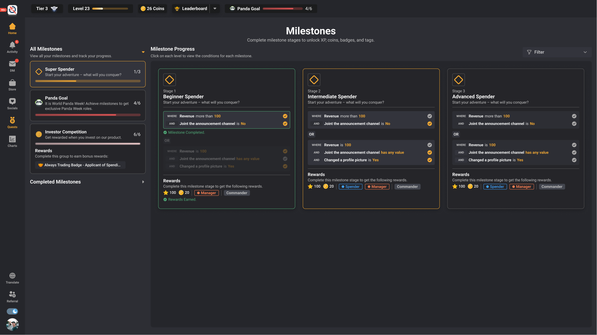
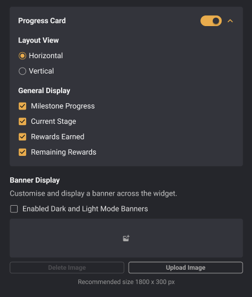
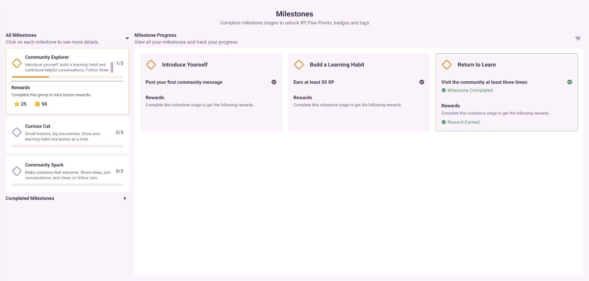
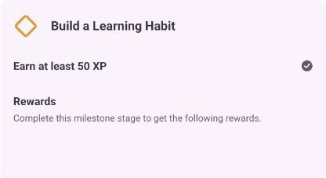
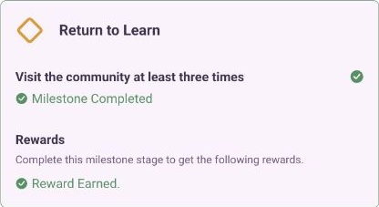

Progression / conditions / rewards
Make the next step
feel obvious.
Milestones turn a broad community goal into a visible journey: what to do, which conditions count, how far you have progressed and what you unlock along the way.

Product and widget configuration design; local reconstruction of documented behavior.
Figma design + observed CatTrader widget
Group → stages → conditions → progress → rewards
Feature flow
A journey with rules underneath every stage.
- 01
Discover a milestone
The member sees the group, its description, overall progress and reward context.
- 02
Inspect a stage
Each stage exposes the required action and its conditions. The member can understand the requirement before acting.
- 03
Track completion
Condition results make progress visible across the stages. Completion and pending work remain distinguishable.
- 04
Understand the outcome
The journey keeps completed stages, earned rewards and the next requirement in context.
Explore the product logic
Progress needs an explanation, not just a percentage.
Select a stage-completion state to see how the same three requirements become a readable progress story. The example uses the observed CatTrader mission structure.
Introduce yourself
Post a community message
Current requirementBuild a learning habit
Earn at least 50 XP
Requirement to completeReturn to learn
Visit three times
Requirement to completeEach condition remains visible before the member starts.
Local illustration · synthetic examples · no account, reward or configuration changes.
Design intent → portable experience
The same journey can have different reading densities.
- Feature source
- Milestone groups own the conditions and reward model.
- Widget selection
- The embed chooses which eligible groups to show.
- Display
- List, tile and map views express the same stages; condition display can be full, dropdown or tabs.
- Progress card
- Current stage, earned rewards and remaining rewards are separate display fields.

Configuration principle
Presentation can change without rewriting the journey.
- Source authority
- A widget can follow milestone display settings or use its own approved display choices. It does not define a second completion model.
- Group and stage
- Group selection and layout remain distinct from stage details, conditions and rewards.
- One coherent experience
- Names, descriptions, counts and requirements stay understandable in every layout.
The working feature / staging evidence
A requirement, a result and the journey between them.
The CatTrader member view connects the selected milestone group to its stage conditions. The detail crops preserve the difference between an incomplete requirement and a completed stage.



Evidence and limits
Read the artifacts at their actual strength.
Design intent and screen hierarchy.
The visible state at capture time.
Deterministic explanation of documented rules.
Source gaps and integration limits
The widget is configured for the saved CatTrader and public portfolio origins; localhost is excluded. Completion, rewards and backend events were not exercised live.
Feature walkthrough · updated 12 October 2026. Screens and source records are curated for explanation; no unverified adoption or business-impact claim is made.